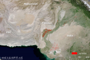

Contact

Desert Locust Monitoring and Loss Assessment of Pakistan, India, Nepal
In recent decades, the spatial and temporal distribution of surface water has
undergone significant changes due to the influence of both climate change and human activity. The
change in surface water distribution has resulted in serious social (e.g., water conflict) and
ecological (e.g., ecosystem degradation) issues in many regions. Monitoring and analyzing surface
water systems, their changes in surface area, and the protection and restoration of these aquatic
ecosystems are included in the 2030 Agenda for Sustainable Development.
Latest modification time：Aug. 12, 2020, 8:32 p.m.
Mapping the extent and dynamic change of mangrove forests in Southeast Asia
Mangrove forests are swampy woody plant communities that grow on the
intertidal zone of tropical and subtropical coasts. They have special sea-land characteristics and
enormous ecological, …economic, and social benefits. Mangrove forests play an important role in
highlighting global climate and environmental changes. Additionally, they are important for
maintaining biodiversity, protecting coastal environments, purifying coastal waters, and
protecting farmland and villages from natural disasters such as hurricanes and tsunamis.
Latest modification time：Aug. 12, 2020, 8:32 p.m.
Mapping the extent and dynamic change of mangrove forests in Southeast Asia
Mangrove forests are swampy woody plant communities that grow on the
intertidal zone of tropical and subtropical coasts. They have special sea-land characteristics and
enormous ecological, …economic, and social benefits. Mangrove forests play an important role in
highlighting global climate and environmental changes. Additionally, they are important for
maintaining biodiversity, protecting coastal environments, purifying coastal waters, and
protecting farmland and villages from natural disasters such as hurricanes and tsunamis.
Latest modification time：Aug. 12, 2020, 8:32 p.m.
CONTACT US
Big Earth Data Science Engineering Project (CASEarth) SDG Working Group
Address: No.9 Dengzhuang South Road, Haidan District, Beijing 100094, China
Tel: 86-10-82178900 Fax: 86-10-82178980 Postcode:100094
Website: www.sdgs.casearth.cn Email:casearth@radi.ac.cn